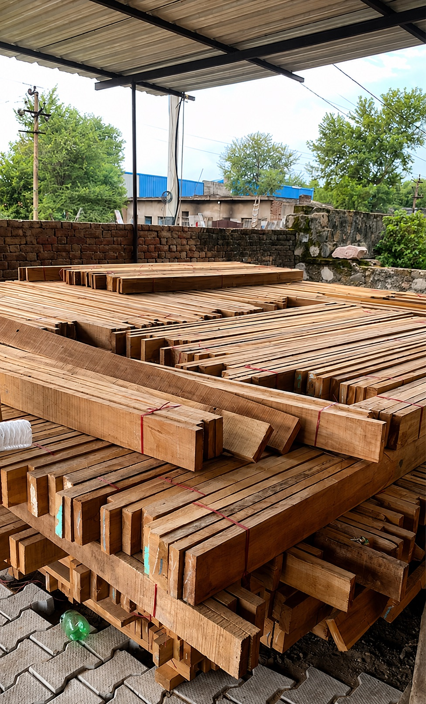
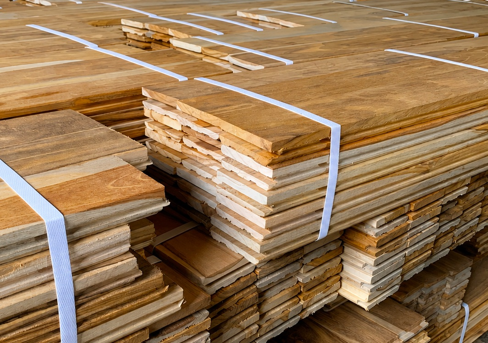

Teak Flooring.
Manufactured by Savitri Timbers.
Delivering Quality · Honouring Commitment
Teak flooring is part of Savitri Timbers' core manufactured flooring line. Incoming teak boards are processed into finished flooring profiles through the same hardwood manufacturing sequence used for maple flooring.
Teak Flooring
Teak flooring is part of Savitri Timbers' core manufactured flooring line. Incoming teak boards are processed into finished flooring profiles through the same hardwood manufacturing sequence used for maple flooring.
Teak timber supply for non-flooring applications remains part of the broader Products portfolio. This section covers manufactured teak flooring only.
- Raw teak boards
- 3″ / 4″ wide × 1″ thick, length 3 ft and above · measured in CFT
- Finished teak flooring
- 65 mm or 92 mm wide × 22 mm thick · sold by SQFT
Distinct from Products
Broader timber species listed on Products are supply/sourcing capability. They are not automatically finished flooring products. This page covers finished flooring — not the broader timber sourcing portfolio on Products.
Manufactured Teak Flooring
Finished teak flooring produced through Savitri Timbers' hardwood manufacturing sequence.
Teak Timber Supply
Teak timber supply for non-flooring applications remains part of the broader Products portfolio.
Shared Finished Sizes
Finished teak flooring uses 65 mm or 92 mm width × 22 mm thickness and is sold by SQFT.
Raw Material, Finished Flooring & Units
These dimensions and commercial units are the approved Sprint 4.2 business specifications. No additional tolerances, performance ratings or alternative standards are implied.
| Material / Product | Incoming (raw) | Finished | Commercial unit |
|---|---|---|---|
| Teak flooring | 3″ / 4″ × 1″, 3 ft+ | 65 / 92 mm × 22 mm | SQFT |
Teak and Maple finished flooring is measured and sold in square feet (SQFT). Incoming Teak/Maple boards are commercially measured in cubic feet (CFT).
Manufacturing Transformation
Teak and Maple flooring follows a clear material path: incoming boards measured in CFT are processed into finished flooring sold by SQFT.
- Raw boards 3″ / 4″ × 1″, 3 ft+ · CFT
- Manufacturing Hardwood processing at Savitri Timbers
- Finished flooring 65 / 92 mm × 22 mm · SQFT
For the detailed machine sequence, inspection and packaging evidence, see Manufacturing.
Inside the Flooring Manufacturing Process
Authentic photographs from Savitri Timbers' manufacturing operations. These images support manufacturing capability — they do not prove inventory depth, certifications or species origin claims.


Discuss a Flooring Requirement
Share your flooring species preference, finished width interest (65 mm or 92 mm), approximate area in SQFT, and project context. For broader timber supply outside manufactured flooring, use Products.
Enquire About Flooring